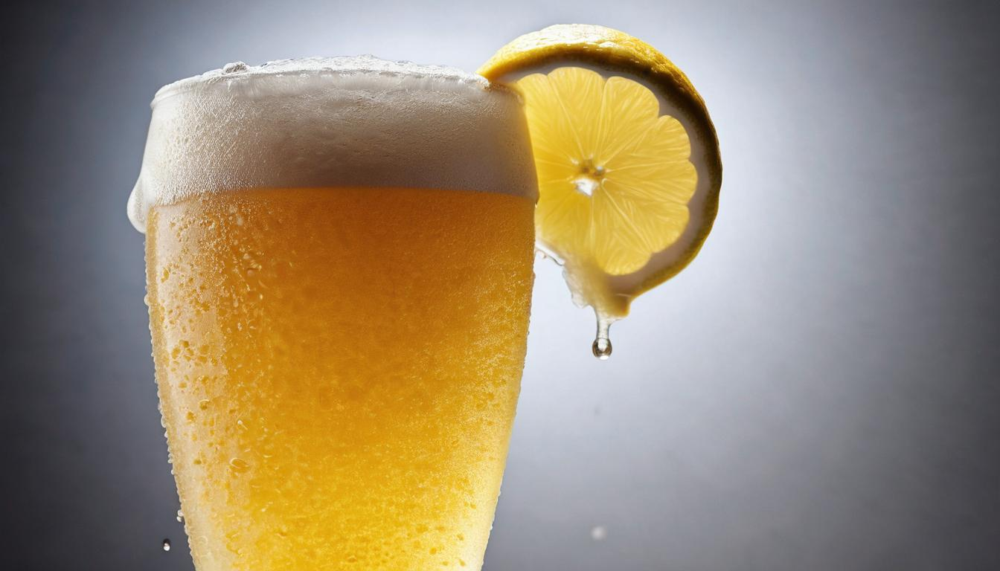
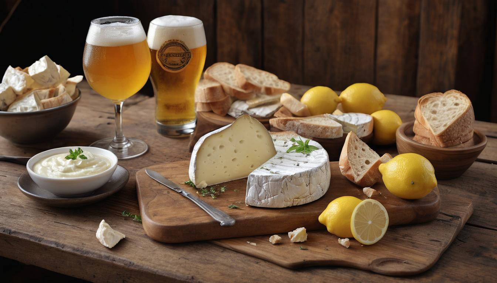
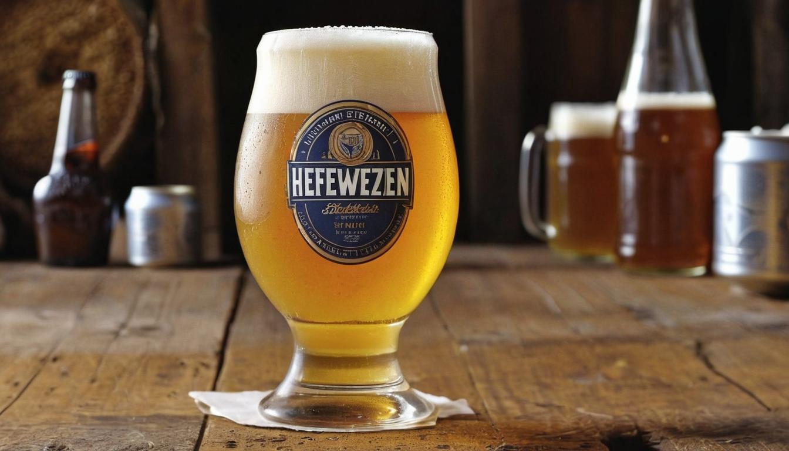

Hefeweizen Wheat Beer
For craft beer enthusiasts, few things are as satisfying as savoring a perfectly brewed Hefeweizen. Born in the Bavarian monasteries of the 1520s, this classic German wheat beer owes its memorable banana and clove notes to special yeast strains. Its story is not just one of taste but also of tradition and innovation.
Understanding Hefeweizen goes beyond appreciating its refreshing quality. It's about diving into a rich history where even laws couldn't suppress its brewing. Through extensive research and expert consultations, we've crafted an ultimate guide highlighting everything from its origins to brewing tips, ensuring you have all you need to elevate your homebrewing skills and impress your friends at tasting events.
Hefeweizen is characterized by its cloudy appearance, fruity (banana) and phenolic (clove) aroma and flavor, and at least 50% malted wheat content. It typically has low to moderate alcohol content and pairs well with salads, seafood, and egg dishes. The unmistakable hefeweizen glow and foam cap can be showcased in a weizen vase glass due to its effervescence.

The History and Origins of Hefeweizen
Just imagine, it's the 16th century in Bavaria, Germany. Monks in monasteries quietly brew their delicious Hefeweizen, a unique wheat beer that would soon capture the hearts of beer lovers worldwide. With "Hefe" translating to "yeast" and "weizen" referring to "wheat," the name itself gives a clue to its distinct cloudy appearance due to suspended yeast – a defining characteristic that sets it apart from other beers.
Now, here’s where things get really interesting. Despite facing initial restrictions on the use of wheat in brewing due to the Bavarian Beer Purity Law of 1516 (Reinheitsgebot), which favored barley, Hefeweizen persisted and even thrived. This was partly due to royal privileges enjoyed by certain breweries and the growing demand for this unique style of beer amongst the Bavarian nobility.
As time went on, the appeal of Hefeweizen only grew stronger. Its distinctive flavors of banana and clove emerged as notable hallmarks, achieved through the specific yeast strains used during fermentation. As this delightful brew gained popularity, it transformed from an offering within the confines of monastery walls to a beloved staple of Bavarian beer culture.
The rich history of Hefeweizen is not just a tale of perseverance; it's also a story of cultural renaissance. From humble beginnings in monasteries to becoming a prized choice among Bavarian nobility, Hefeweizen's journey is steeped in tradition and has left an indelible mark on beer culture as a whole.
It's fascinating to consider that while the Beer Purity Law of 1516 initially posed challenges for wheat-based beers like Hefeweizen, it ended up contributing to the meticulous brewing standards that make this style so exceptional.
The roots of Hefeweizen run deep, intertwined with historical events, royal favors, and a persistent dedication to craftsmanship. This rich history has laid the foundation for the enduring legacy of this classic German wheat beer.
With a deeper understanding of the historical tapestry woven around Hefeweizen, we can now explore its intricate brewing process, delving into the art and science behind crafting this iconic beverage.
Brewing a Traditional Hefeweizen
Brewing a traditional Hefeweizen is an art as much as it is a science. The intricate steps involved in creating this beloved German wheat beer are designed to yield its characteristic wheat malt profile, distinctive yeast esters, and phenolic compounds. Let's break down the brewing process step by step to uncover the secrets behind its signature flavor.
Step I - Mashing
The hallmark of Hefeweizen lies in its use of at least 50% malted wheat in the mash bill, with barley making up the rest. This high wheat content contributes to the beer's light body and frothy head. During the mashing process, the starches in the grains are converted into fermentable sugars, forming the crucial base for the beer's flavor and mouthfeel. This meticulous step sets the stage for the distinct character of Hefeweizen, giving it its renowned cloudy appearance and smooth texture.
Step II - Boiling and Hopping
Following mashing, the wort undergoes boiling and hopping. German Noble hops such as Hallertau or Tettnang are typically selected to provide a delicate floral and spicy aroma that complements, rather than overwhelms, the malt and yeast character of the brew. The gentle hopping process allows the wheat malt and yeast esters to take center stage in creating Hefeweizen's iconic fruity and clove-like flavors.
Step III - Fermentation
After boiling and hopping, the wort is cooled and then transferred to a fermentation vessel where it meets its key player—the Weizen yeast. This fermentation occurs at relatively warm temperatures (18-22°C or 64-71°F), carefully calibrated to encourage the production of fruity esters and phenolic compounds that define Hefeweizen's distinctive flavor profile. The result is a beer displaying delightful notes of banana and clove, setting it apart from other brews.
Each step in the brewing process of traditional Hefeweizen plays a vital role in shaping its unique attributes, from its hazy appearance to its rich array of aromas and flavors. Understanding these processes illuminates why Hefeweizen holds a special place in the world of beer enthusiasts.
Selecting Ingredients and Fermentation Process
When it comes to crafting a delightful Hefeweizen, ingredient selection is crucial. German-style hefeweizen is renowned for its distinctive flavors, which stem from the carefully chosen primary components: malted wheat, barley malt, German Noble hops, water, and Weizen yeast. The blend of these ingredients gives Hefeweizen its characteristic fruity (banana) and phenolic (clove) aroma and flavor.
The malted wheat plays a significant role in defining the character of Hefeweizen. It typically comprises 50-70% of the grain bill, contributing to the beer's cloudiness and robust body. This creates the iconic straw to amber color and provides a smooth mouthfeel quintessential to this style. Meanwhile, the barley malt adds depth and sweetness to the brew, balancing out the wheat's natural tartness.
To complement these malts, German Noble hops are chosen for their delicate bitterness and noble aroma—contributing to Hefeweizen's overall balance without overpowering the subtle wheat and yeast flavors at play.
Let's talk about temperature—specifically fermentation temperature. This is where things get interesting. If you're looking to enhance those delightful banana notes in your Hefeweizen, aim for a slightly higher fermentation temperature of around 64-68°F (18-20°C). This helps promote the development of esters responsible for those fruity aromas, giving your beer that classic Hefeweizen bouquet. On the other hand, if you're more inclined towards clove-like phenols, a slightly cooler fermentation temperature ranging between 61-64°F (16-18°C) is more suitable. This encourages the yeast to produce those spicy, clove-like characteristics that complement the fruity elements.
Let's consider a simple analogy—a chef meticulously choosing ingredients and deciding on cooking methods to create a masterpiece dish. Likewise, brewers carefully select their ingredients and adjust parameters to achieve the desired flavor profile in their beers.
In summary, when preparing to brew Hefeweizen, each ingredient must be chosen with care. Every step influences the final product's flavor profile. Understanding how each component contributes to the overall palate is essential for crafting an authentic and delightful Hefeweizen beer.
Understanding the intricate process behind brewing Hefeweizen sets the stage for perfecting pouring and drinking techniques—yielding an experience that truly honors this classic German wheat beer.
Pouring and Drinking Techniques
Pouring a hefeweizen isn't merely about filling up a glass; it's an essential step in ensuring you experience the full flavor and aroma of this classic German beer. The right pouring technique and appropriate serving temperature can truly elevate your enjoyment of this unique beverage.
First things first, chilling the beer to the optimal temperature is crucial. Hefeweizen should be served at a temperature between 45-50°F (7-10°C) to preserve its refreshing qualities. When the beer is too warm, it can overshadow the delicate flavors and aromas.
Next, choosing the right glass for your hefeweizen is vital. The Weizen vase, with its tall, curvaceous design, is specifically crafted to showcase the beer's beautiful glow and foam cap due to its effervescence. Rinsing the glass with cold water reduces friction and enhances head formation, ensuring you get that perfect pour every time.
Now, onto the most crucial step - pouring the beer. Tilt the glass at a 45-degree angle and pour slowly down the side. This gentle pour helps maintain the carbonation and preserves the delightful foamy head. Once the glass is half full, straighten it out and pour vigorously. This agitation rouses the yeast sediment at the bottom of the bottle, ensuring it ends up in the glass to maintain that characteristic cloudy appearance and full flavor.
It may sound like a lot of work just to pour a beer, but believe me when I say that every step is worth it when you take that first sip of perfectly poured hefeweizen.
Savoring Each Sip
| Drinking Technique | What To Know |
|---|---|
| Sipping Slowly | Savor each sip to fully appreciate the complex flavors and aroma, avoiding gulping to fully appreciate the wheat and yeast character |
| Taste and Aroma | Take note of the mild alcohol, low hop bitterness, low malt sweetness, banana esters, and clove phenols |
| Finishing Strong | Hefeweizen has a high level of carbonation with a short finish |
So there you have it - just by learning some simple pouring techniques and savoring each sip with mindfulness, you can truly appreciate all that a hefeweizen has to offer. Next time you're pouring yourself a glass of this classic German beer, remember these techniques for an enhanced drinking experience.
As we have mastered the art of pouring and savoring a hefeweizen, let's now explore how this classic German wheat beer can be paired with various delectable dishes.
Pairing Hefeweizen with Food

Hefeweizen is a delightfully versatile German wheat beer, distinguished by its refreshing, fruity flavors and effervescent quality. These characteristics make it an exceptional partner for a wide array of dishes. Its lively carbonation and balanced sweetness make it a natural accompaniment to many culinary delights.
One of the striking features of Hefeweizen is its ability to complement the flavors of seafood. The light, fruity notes of the beer harmonize beautifully with the delicate taste of grilled shrimp or scallops. The effervescence enhances the experience, cleansing the palate between bites and leaving a pleasant aftertaste—a mini celebration in your mouth with each sip and bite.
The beauty of this beer is how it adds a zesty touch to salads. The citrus-based dressings come alive when combined with the hints of banana and clove in the beer's flavor profile—an unexpected yet delightful union that elevates the entire salad-eating experience.
Hefeweizen's slight sweetness and lively carbonation also work wonders with egg dishes like quiche. The bubbles cut through the richness of the eggs, creating an exquisite balance on the palate—a perfectly choreographed dance between flavors, each enhancing, not overshadowing, the other.
Additionally, in Bavaria, it's a beloved tradition to pair Hefeweizen with Weißwurst (white sausage), a pretzel, and sweet mustard. This classic combination has stood the test of time and continues to be a delightful culinary experience for beer enthusiasts worldwide.
The refreshing quality of Hefeweizen makes it an excellent palate cleanser during meals. It has this magical ability to reset your taste buds, preparing them for the next delectable bite—whether cutting through the richness of an egg dish or enhancing the brightness of citrusy salads, Hefeweizen proves itself as a highly adaptable beverage that can enhance a variety of culinary experiences.
Pairing Hefeweizen with food isn't just about enhancing flavors; it's about creating memorable dining experiences that celebrate the harmony between beer and cuisine.
As we've glimpsed into the art of combining Hefeweizen with various culinary delights, now let's venture into discovering the diverse range of popular varieties and brands that exemplify this classic German wheat beer.
Popular Varieties and Brands

One of the reasons why Hefeweizen has become so beloved is the diverse range of brands that offer unique flavors and profiles. From well-established breweries to smaller, craft producers, there are plenty of options to explore. Let's take a closer look at some popular examples and dive into their distinctive flavors.
Weihenstephaner Hefe Weissbier
This renowned brew comes from the oldest continuously operating brewery in the world, the Weihenstephan Brewery, dating back to 1040. Their Hefe Weissbier is often lauded for its exceptional balance of fruity banana and spicy clove notes, resulting in a bright, refreshing taste. The brewery's rich history and commitment to quality craftsmanship make this Hefeweizen a must-try for beer enthusiasts seeking an authentic, traditional experience.
Paulaner Hefe-Weißbier
The Paulaner Brewery, established in 1634 in Munich, has been producing exceptional beers for centuries. Their Hefe-Weißbier stands out for its fruity, full-bodied character that's crisp and easy to drink. This brew offers a delightful combination of citrusy aromas and a smooth, balanced taste, making it a popular choice for those who appreciate a refreshing yet nuanced wheat beer.
Franziskaner Hefe-Weissbier
With a legacy dating back to 1397, the Franziskaner Brewery, has mastered the art of creating a Hefe-Weissbier with a light, spicy aroma and harmonious flavor profile. This brew delights the palate with its subtly sweet notes and earthy undertones, culminating in a well-rounded and satisfying sensory experience. Its widespread popularity reflects its time-honored reputation for crafting exceptional wheat beers.
Ayinger Bräuweisse
From the scenic Bavarian village of Aying emerges the Ayinger Brewery, celebrated for its dedication to traditional brewing methods and distinctive flavor profiles. The Ayinger Bräuweisse enchants with its mild, yeasty aroma and a slightly tart finish, creating a nuanced and complex drinking experience. Its enticing blend of floral and herbal notes makes it an intriguing choice for those seeking an immersive exploration of Hefeweizen's diverse characteristics.
Erdinger Weissbier
Erdinger Weissbier stands as a globally recognized brand synonymous with excellence in brewing craftsmanship. This iconic beer offers a smooth, slightly nutty flavor profile that appeals to a wide range of palates. With an emphasis on quality ingredients and meticulous attention to detail, Erdinger's Weissbier exemplifies the time-honored traditions that have contributed to the enduring popularity of German wheat beers around the world.
Each of these esteemed Hefeweizen brands embodies the rich heritage and passion for brewing that defines German beer culture. Exploring these diverse varieties not only provides insight into the distinct flavors and aromas characteristic of Hefeweizen but also offers an opportunity to appreciate the artistry and dedication of renowned breweries in crafting these exceptional brews.
In conclusion, the world of Hefeweizen unveils a splendid tapestry of flavors woven by time-honored breweries, inviting enthusiasts to savor each sip while immersing themselves in centuries-old traditions. Cheers to the delightful journey through the classic German wheat beer!